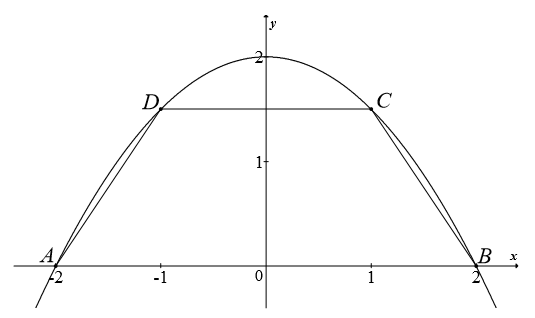

Matura rozszerzona - kurs - część 54 - zadania
Rozpatrujemy wszystkie stożki, których przekrojem osiowym jest trójkąt o obwodzie
\(20\). Oblicz wysokość i promień podstawy tego stożka, którego objętość jest największa. Oblicz
objętość tego stożka.
\(V=\frac{32\pi \sqrt{5}}{3}\)
Rozważmy wszystkie ostrosłupy prawidłowe sześciokątne, w których suma długości
krótszej przekątnej podstawy i wysokości ostrosłupa jest równa \(9\). Wyznacz długość krawędzi
podstawy tego z rozważanych ostrosłupów, którego objętość jest największa. Oblicz tę największą
objętość.
\(V_{max}(2\sqrt{3})=18\sqrt{3}\)
Parabola o równaniu \(y=2-\frac{1}{2}x^2\) przecina oś \(Ox\) układu współrzędnych
w punktach \(A=(-2,0)\) i \(B=(2,0)\). Rozpatrujemy wszystkie trapezy równoramienne \(ABCD\),
których dłuższą podstawą jest odcinek \(AB\), a końce \(C\) i \(D\) krótszej podstawy leżą na
paraboli (zobacz rysunek). Wyznacz pole trapezu \(ABCD\) w zależności od pierwszej współrzędnej
wierzchołka \(C\). Oblicz współrzędne wierzchołka \(C\) tego z rozpatrywanych trapezów, którego pole
jest największe. 
\(P(x)=4-x^2+2x-\frac{1}{2}x^3\)
\(C=\left (\frac{2}{3},
\frac{16}{9} \right )\)
Wśród wszystkich graniastosłupów prawidłowych trójkątnych, w których suma długości
wszystkich krawędzi jest równa \(12\), jest taki, który ma największą objętość. Oblicz długości
krawędzi tego graniastosłupa i jego objętość.
\(\frac{16\sqrt{3}}{27}\)